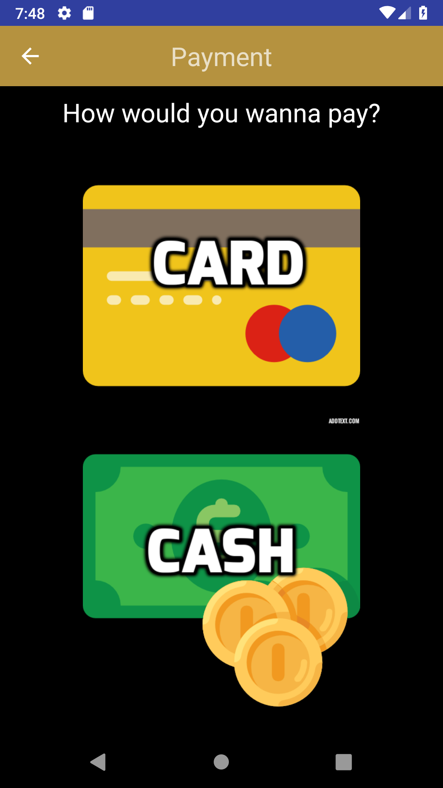
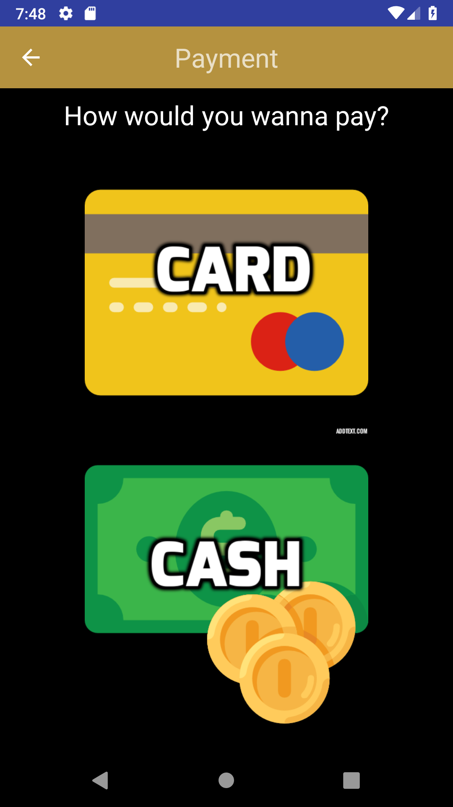
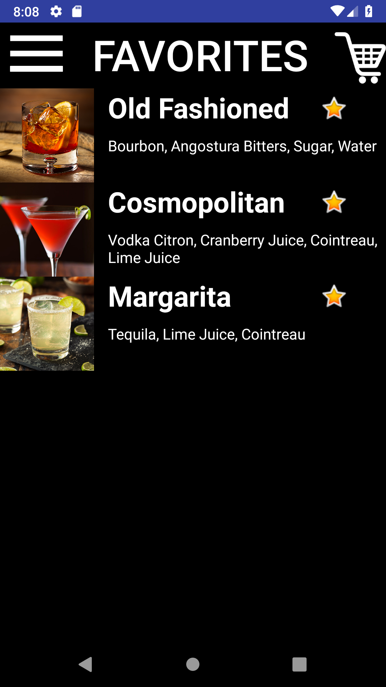
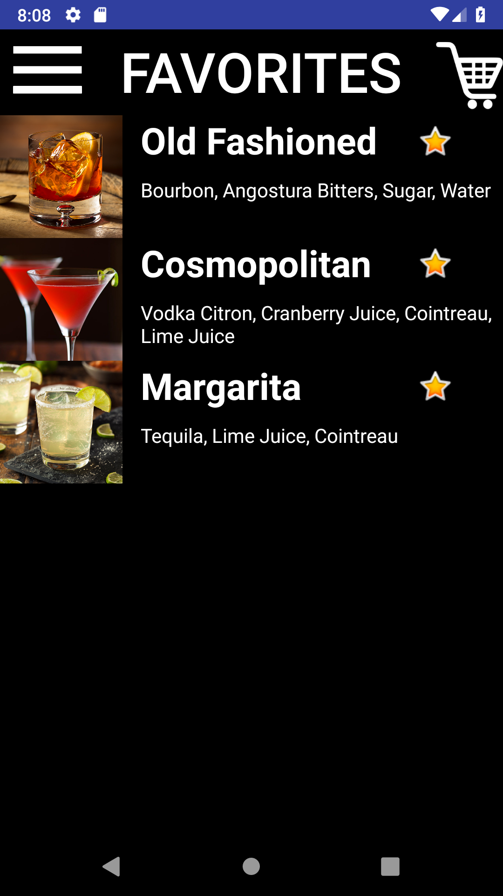
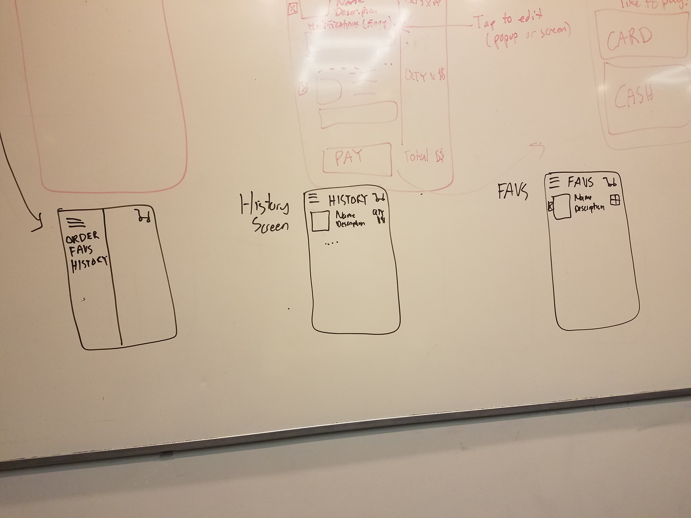
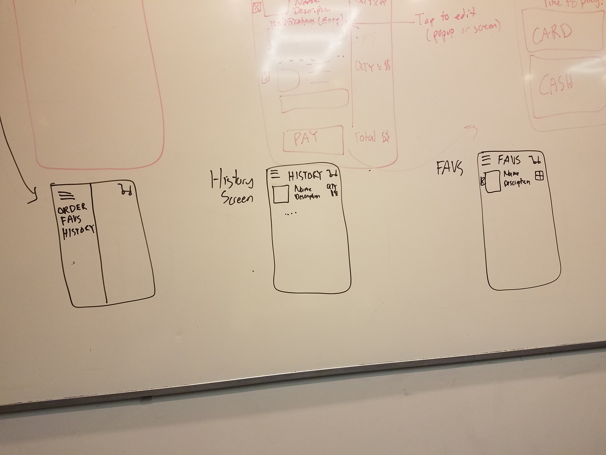

Hyunrae Kim
I am a junior at Washington University in St. Louis pursuing a major in Computer Science with a minor in Mathematics. I am currently spending a semester abroad at the Hong Kong University of Science and Technology. This page primarily serves as a portfolio page for COMP4461 Human-Computer Interaction.
Education
Washington University in St. Louis
Barvel

 


 

Introduction
Work/Thought Process | Demo
Props to Kevin for an awesome video!
Issues | Solutions | Design Considerations
-
Because the app will be used in a dark setting, we used black backgrounds and other dark colors for app elements.
-
Assuming that most customers will have a drink or two, we implemented large buttons with images for slightly intoxicated customers to navigate through the app. In addition, we increased the default toolbar size.
-
Added a text box for any notes to the bartender along with main customizations so users can express smaller details. important for customeres with allergies or strong preferences.
-
A favorites tab so less hassle to order "the usual"
-
A history tab that not only serves as a receipt but a reminder of how much exactly he or she drank.
-
Push notification so users do not have to wait by the bar for their drinks.
-
Bars are usually pretty trendy so we went for a trendy but simple look for our app.
The Process: Design | Development
Our group, mostly having previous Android experience, chose to use Android Studio to design the app instead of using an app design software. However, being a 5-person project, we faced many issues with project configuration and version control. In addition, we faced many issues when it came to making small design changes, most notably increasing the cart icon on the toolbar. However, our group met up on many occassions for hours at a time to overcome the complications.
On our second meeting, we continued to discuss and answer key questions for the app. What were our target customers? What are the main needs we are fulfilling? What are the different design considerations that need to be made? On our third meeting, we drew out a storyboard of the app. Once again, we divided up the work to develop. Our fourth and final meeting was to address the fact that each of our pages did not have a cohesive theme or styling. We came together and made both style and intuitive changes to each of the pages.
 



Overall, while we did develop outside group meetings, we worked mostly in a group meeting room. This way, we always had more than one pair of eyes on each page, leading to conversation and suggestions for improving the design. Also, dealing with merge conflicts in-person was key.
Finally...
I do think using a design software could have cut a lot of time that could be used to build other features and be more ambitious with our designs. Otherwise, I am satisfied with how the prototype and the presentation/video turned out.